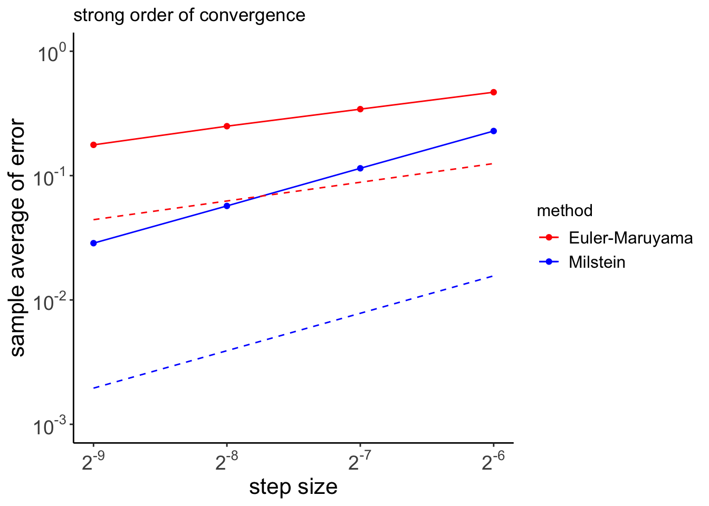

Numerical simulation for stochastic differential equations
stochastic calculus
A down-to-the-bone post, where few issues concerning the numerical simulation of stochastic differential equations are discussed with just a limited amount of technical detail.
Author
Angelo Maria Sabatini
Published
June 6, 2024
We consider here the class of stochastic processes known as diffusion processes, which are solutions to stochastic differential equation (SDE) of the form:
and \(\{W(t),t\in[0,T]\}\) is the so-called Brownian motion or Wiener process.
The Wiener process
The Wiener process \(\{W(t),t\in[0,T]\}\) has independent Gaussian increments and continuous sample paths, and comes endowed with the following properties:
\(W(0)=0\) (with probability 1).
For \(0\leq s\leq t\leq T\) the random variable given by the Gaussian increment \(W(t)-W(s)\) is distributed with mean zero and variance \(t-s\); equivalently, \(W(t)-W(s)\propto\sqrt{t-s}\,Z\), where \(Z\) denotes a standard Gaussian random variable, with a mean of zero and a variance of one.
For \(0\leq s\leq t\leq u\leq v\leq T\) the increments \(W(t)-W(s)\) and \(W(v)-W(u)\) are independent (condition of independence on any two disjoint intervals).
The two deterministic functions \(b(\cdot,\cdot)\) and \(\sigma(\cdot,\cdot)\) are called, respectively, the drift and the diffusion coefficients of the SDE. Under a number of assumptions regarding their properties (i.e., global Lipschitz and linear growth, see (Iacus 2008) for mathematical details) the SDE has a unique solution with continuous sample paths such that
The Itô formula is an important tool of stochastic calculus. It can be regarded as the stochastic version of the Taylor expansion of a function \(f(t,X_t)\) stopped at the second order, where \(X_t\) is a diffusion process. If the function \(f(\cdot,\cdot)\) is a twice differentiable function on both arguments, we have:
To apply a numerical method to the generic SDE of Equation 1 over the time interval \([0,T]\), the time interval needs to be discretized (Higham 2001). Let \(\Delta t=T/M\) for some positive integer \(M\), and \(t_n=n\Delta t\). The numerical approximation to \(X(t_n)\) will be denoted \(X_n\) (\(n=1,\cdots,M\)).
It is worth noting that in the case when \(\sigma(X_t)=0\), then the problem becomes deterministic: this approximation method reduces to the standard Euler method for the ordinary differential equation \(\dot{X}_t=b(t,X_t)\).
The Milstein’s method adds a correction to the stochastic increment to produce the solution to the SDE. The correction arises because the Taylor expansion must be modified in the case of Itô calculus. Truncating the Taylor expansion to the second order at an appropriate point yields:
The methods of approximation of the continuous solution to an SDE are classified according to their different properties. Mainly two criteria of optimality are used in the literature: the strong and the weak (orders of) convergence.
A time-discretized approximation \(X_\delta\) of a continuous-time process \(X\), with \(\Delta t\) the time increment of the discretization, is said to be of strong order of convergence \(\gamma\) to \(X\) if for any fixed time horizon \(T\) it holds true that
for any \(\tau\in[0,T]\), with \(\Delta t_0>0\) and \(C\) a constant that does not depend on \(\Delta t\).
Along with the strong convergence, the weak convergence can also be defined. In the same conditions as above, \(X_{\Delta t}\) is said to converge weakly of order \(\gamma\) to \(X\) if for any fixed horizon \(T\) and any \(2(\beta+1)\) continuous differentiable function \(g\) of polynomial growth, it holds true that
for any \(\tau\in[0,T]\), with \(\Delta t_0>0\) and \(C\) a constant that does not depend on \(\Delta t\).
Whereas the strong order of convergence measures the rate at which the mean of the error decays as \(\Delta t\rightarrow0\), the weak order of convergence measures the rate of decay of the error of the means.
Methods of approximation of some order that strongly converge usually have a higher order of weak convergence. This is the case with the Euler-Maruyama method, which is strongly convergent of order \(\gamma=1/2\) and weakly convergent of order \(\beta=1\) (under some smoothness conditions on the coefficients of the SDE). The Milstein’s method has both weak and strong order of convergence, \(\gamma=\beta=1\), which is superior to the Euler–Maruyama method.
It is interesting noting that, when the diffusion coefficient does not depend on the state variable of the process, the Euler-Maruyama and Milstein’s methods coincide. This is one important case, therefore, when the Euler-Maruyama method is strongly convergent of order \(\gamma=1\).
Numerical test
Geometric Brownian motion
The geometric Brownian motion (GBM) is the solution to the SDE:
where the parameter \(\lambda\) is interpreted as the constant interest rate and \(\mu>0\) as the volatility. For a GBM, the drift and diffusion coefficients are both linearly related to the state variable \(X\), namely \(b(t,X_t)=\lambda\,X_t\) and \(\sigma(X_t)=\mu\,X_t\).
The explicit solution of the SDE Equation 12 can be found by operating the following change of variable:
Comparing the exact solution Equation 14 with Equation 18 shows how the Milstein method makes the Taylor expansion exact up to order \(\text{O}(\Delta t)\).
The following code will test the strong convergence of both methods when they are applied to the linear SDE Equation 12, with \(\lambda=2,\mu=1,x_0=1\). One thousand sample paths are simulated over the time interval \([0,1]\), for step sizes being integer multiples of \(2^{-9}\;(8,4,2,1)\). The order of convergence is tested at the end point of the chosen time interval. The results of the simulations are shown in Figure 1.
Code
library(tidyverse)set.seed(1792)lambda <-2mu <-1Xzero <-1T <-1N <-2^9dt <-1/NM <-1000Xerr_EM <-matrix(0, nrow = M, ncol =5)Xerr_M <-matrix(0, nrow = M, ncol =5)for (i inseq(1, M, by =1)) { dW <-rnorm(N, mean =0, sd =sqrt(dt)) W <-cumsum(dW) Xtrue <- Xzero*exp((lambda -0.5*mu^2)*T + mu*W[N])for (j in1:5) { R <-2^(j-1) Dt <- R*dt L <- N/R Xtemp_EM <- Xzero Xtemp_M <- Xzerofor (k inseq(1, L, by =1)) { Winc <-sum(dW[(R*(k-1)+1):(R*k)]) Xtemp_EM <- Xtemp_EM*(1+ Dt*lambda + mu*Winc) Xtemp_M <- Xtemp_M*(1+ Dt*lambda +0.5*mu^2*(Winc^2- Dt) + mu*Winc) } Xerr_EM[i, j] <-abs(Xtemp_EM - Xtrue) Xerr_M[i, j] <-abs(Xtemp_M - Xtrue) }}Dtvals <-c(1, 2, 4, 8)*dtXm_EM <-array(0, dim =4)Xm_M <-array(0, dim =4)for (i in1:4) { Xm_EM[i] <-mean(Xerr_EM[, i]) Xm_M[i] <-mean(Xerr_M[, i])}t <-rep(Dtvals, by =2)g <-rep(c("Euler-Maruyama", "Milstein"), each =4)e <-c(Xm_EM, Xm_M)e_t <-c(sqrt(t), t)df <-data.frame(t = t, method = g, error = e, error_true = e_t)

Figure 1: Strong error plot for the Euler-Maruyama and Milstein’s methods; dashed lines give the appropriate reference slope for each method, \(\gamma=0.5\) (Euler-Maruyama) and \(\gamma=1\) (Milstein).
Lamperti transform
An interesting application of the Itô formula Equation 7 is now discussed in connection with a formulation of Equation 4 where the diffusion coefficient is not an explicit function of time, but only depends on the state variable \(X\):
where \(z\) is any arbitrary value in the state space of \(X\). We assume that the function \(F(\cdot)\) defines a one-to-one mapping from the state space of \(X\) to \(\mathbb{R}\). We have:
The Lamperti transform changes the generic SDE Equation 4 into another SDE with unitary diffusion coefficient. As an example of application of the Lamperti transform, we consider here a result on transformations of SDEs that is relevant for the topic of interest in this post.
First, we discretize the Lamperti transform of Equation 22 using the Euler-Maruyama method (see Equation 8):
In conclusion, the Milstein method on the original process and the Euler-Maruyama method on the transformed process are equal up to and including the order \(\text{O}(\Delta t)\).
In general if a transformation such as the Lamperti transform eliminates the interactions between the state of the process and the increments of the Wiener process, the performance of the Euler-Maruyama method on the transformed SDE are expected to improve.
The logarithmic transformation \(F(X_t)=\log X_t\) is an example of nonlinear transformation that is capable of eliminating the interaction between the state \(X_t\) of the GBM process and the increments of the Wiener process \(dW_t\), as shown in Equation 13. Therefore the Euler-Maruyama method can be confidently applied to the transformed process; the Milstein method is then obtained by simply taking the Taylor expansion of the inverse transform.
References
Higham, Desmond J. 2001. “An Algorithmic Introduction to Numerical Simulation of Stochastic Differential Equations.”SIAM Review 43 (3): 525–46. https://doi.org/10.1137/s0036144500378302.